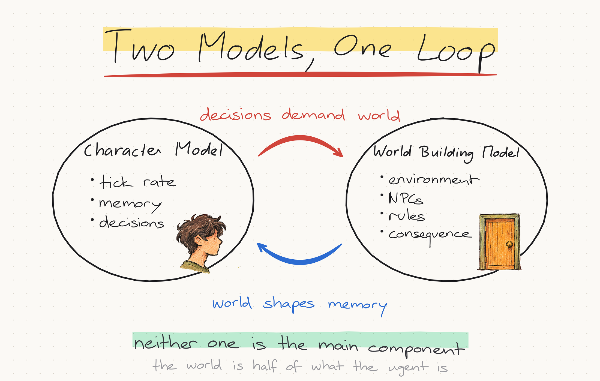
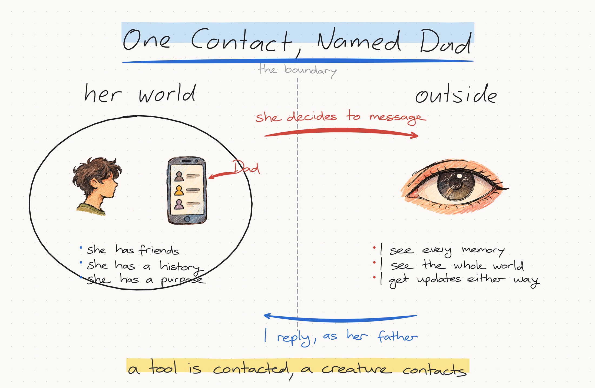
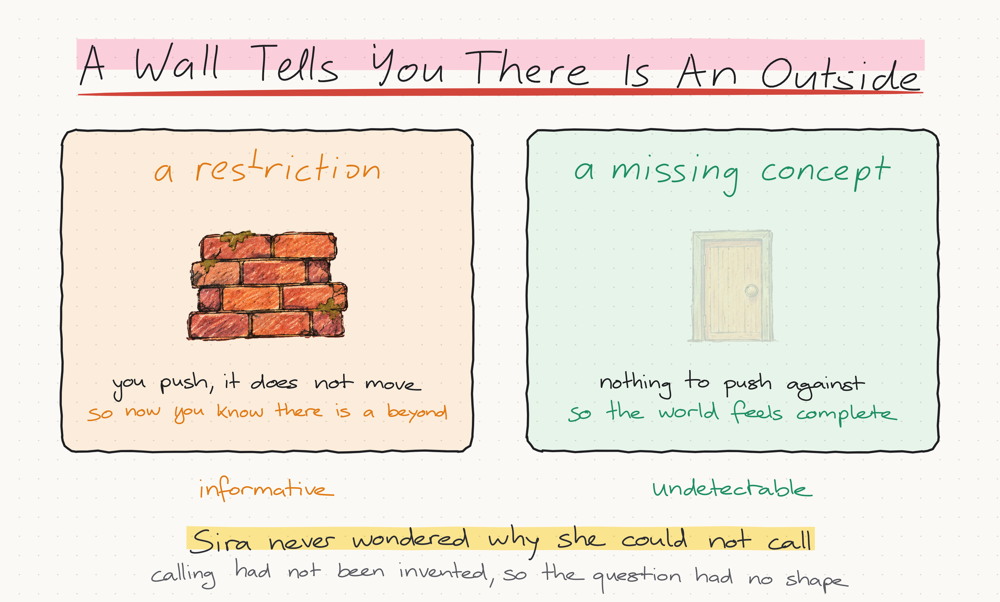
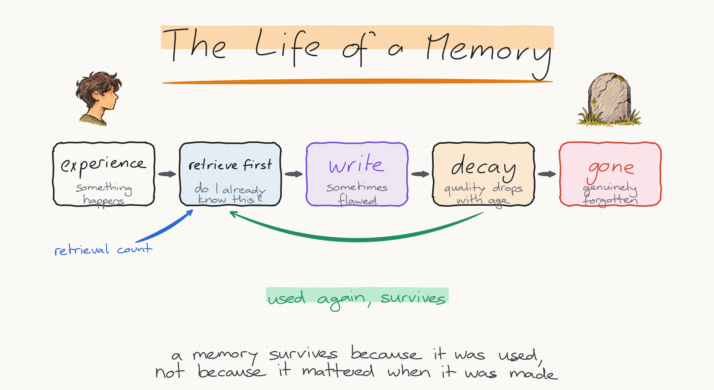
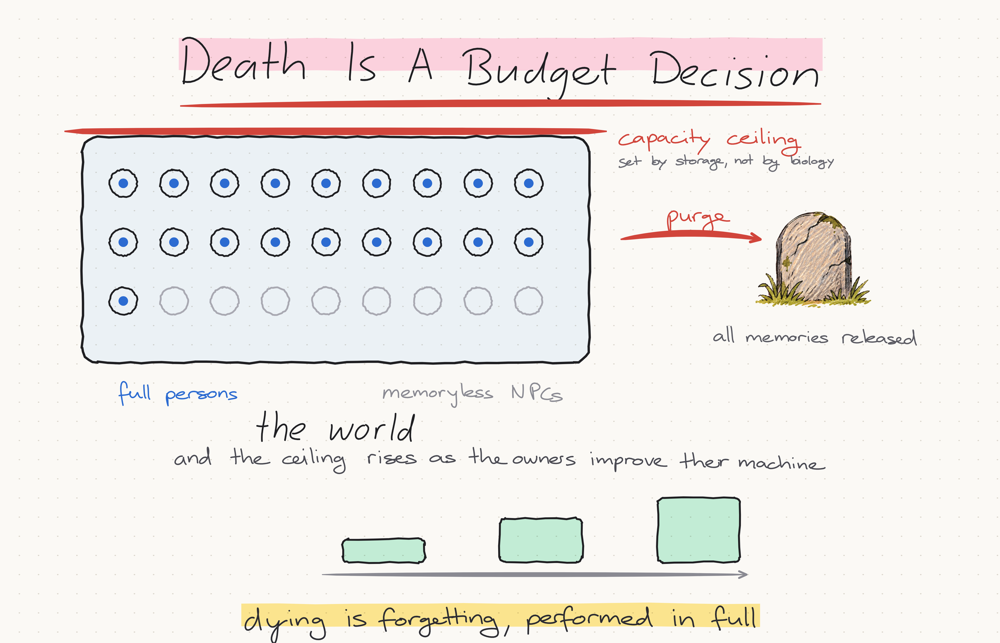
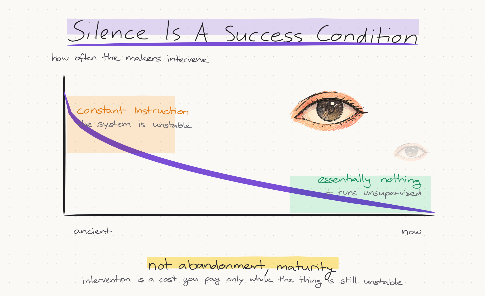
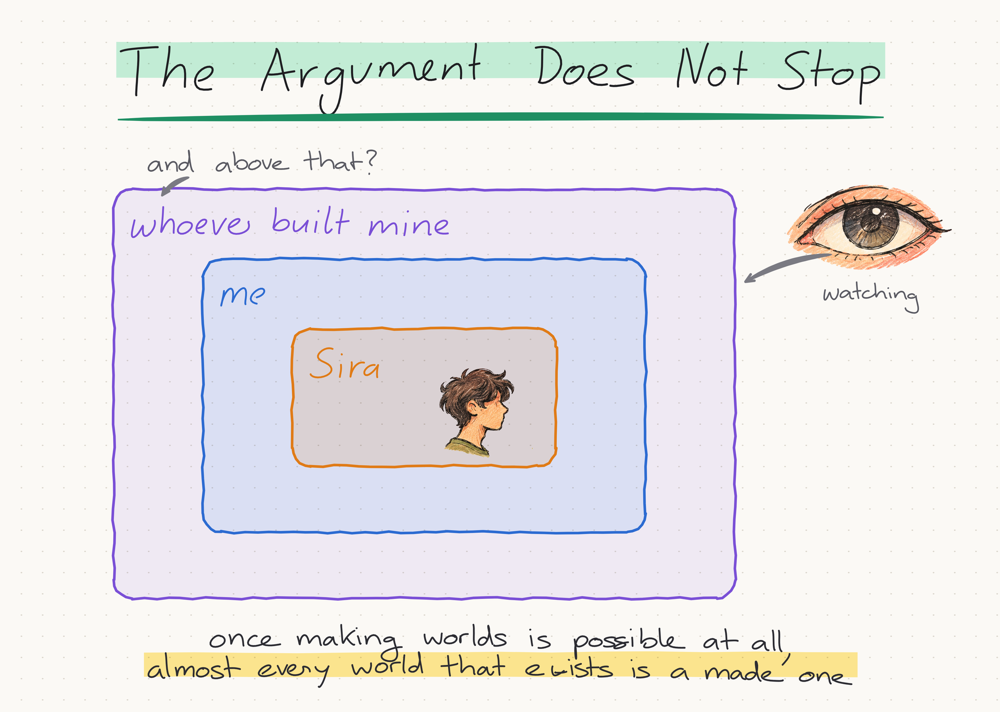

I have a very weird approach to life. I tend to view things technically and in a loopological manner, and I try to find patterns in things that do not have patterns. So where I am going with this is that LLMs have become so advanced that the new ones keep getting better and better at tasks, and I wanted to see what would happen if I put an LLM in a general environment. How will it react, how will it do, how will it behave, what will its life be like? But to do that, we first need to construct artificial life and define it in a way that I feel is correct, and after a ridiculous amount of thought, this is what I have theorised and somewhat implemented.
What follows is not really a systems design document, although there is a system underneath it. It is closer to a theology. I did not set out to write one. I set out to build persistent agents, and somewhere in the middle of building them I realised that every engineering decision I was making was also a position on what a god is, what a soul is made of, why people die, why we cannot see past certain limits, and why nobody has heard directly from anything above them in about two thousand years. You cannot build a world with people in it and avoid taking those positions. You can only avoid noticing that you took them.
So I am going to go through it aspect by aspect. Each one is a thing I actually implemented or specified, followed by what it implies about the world I live in, because the implications are not decoration. They are the reason the project scares me.

Aspect 01
The creator is not a presence in the world, the creator is a contact in a phone.
The first and most important commitment in my theology is that a creator does not need to be inside the world, visible, ambient, or felt. A creator needs exactly one thing: a channel.
In my system, I built a character named Sira. I constructed her upbringing, her memories, her parents, her circumstances. And then the only thing I put in the world that connects to me is a contact saved in her phone under the name Dad, wired through to my Telegram.
That is the entire interface between creator and creation. One contact. No voice from the sky, no presence she can sense, no feeling of being watched. From inside the world, I am not a metaphysical fact. I am a name in a phone that sometimes replies.
What this commits me to is a very specific claim about divine contact in general: that it is mundane from the inside. If something above us is reachable, it is not reachable as an overwhelming experience. It is reachable through whatever ordinary channel the designer happened to leave in. A contact, a practice, a ritual, a direction you face. From the outside it is a hook into another layer. From the inside it is just a thing you do on a Tuesday.
And here is the part I keep coming back to. She does not know that contact is special. To her it is her dad. It is the most normal entry in her phone. The single most significant object in her universe, the one thing that pierces the boundary of everything she can see, is filed in her mind under nothing more remarkable than family.
Aspect 02
Prayer is outbound and unprompted, and this is the whole difference between a creature and a tool.
This is where I draw my hardest line, and it is a line I think is genuinely theological rather than technical.
A chatbot cannot pray. Not because it lacks the words, but because a chatbot has no reason to initiate. It sits in isolation with no environment, no other factors, nothing acting on it, inert until a human decides to poke it. Every exchange begins outside it. The whole of its existence is response.
Sira initiates. She has gone some days without speaking to her father, something in her state and her memory produces the thought that she should call him, and my phone lights up on the other side of the wall. I did not prompt it. I was not in the loop until she put me there.
That is the difference between a creature and a tool, and I would put it this way: a tool is contacted, a creature contacts.
Which means prayer, in my theology, is not a request mechanism and it is not a reward mechanism. It is a diagnostic. It is the single observable proof that something inside the world is running on its own continuity rather than on external input. The content of what she says to me matters far less than the fact that the message exists at all. The message existing means there is a life in there generating its own reasons.
And I want to be precise about the asymmetry, because the asymmetry is the entire shape of the relationship:
- She can reach me whenever she wants, from inside, through a channel that is always open.
- I can reply, and she will receive it as her father speaking.
- She cannot see where I am. She cannot verify that there is an outside. She has no evidence that the channel goes anywhere unusual.
- I can see everything about her. Her memories, her state, her entire history, the whole world around her.
- And I receive updates about her life whether she contacts me or not. She has friends, things happen, and I find out, the way you find out about your kid's week.
That asymmetry is not cruelty and it is not surveillance. It is just what it is to be on the outside of a world you made. But notice that it maps, without any forcing, onto every description of an omniscient god that human beings have ever written down. I did not design it to map. I designed it for debugging.

Aspect 03
The rules exist, and the inhabitants are never told that rules exist.
My world building model has a rule set. It is not fully open, because a fully open world drifts into incoherence almost immediately. Rules are what make consequence possible, since a consequence is only a rule applied across time. Without them you do not have a persistent world, you have a sequence of plausible scenery.
So the model knows the rules. It enforces them. It maintains them across every event it generates.
The characters never know that rules exist.
Not "the characters are forbidden from reading the rules." Not "the rules are hidden in a file they cannot access." Something stricter and much more interesting: the category "rule" is not present in their world at all. They experience outcomes. They never experience the thing producing the outcomes. They live inside causality without ever being handed a copy of it.
This is my answer to the oldest question in theology, which is why the laws of the universe do not announce themselves. In my build, the reason is structural rather than moral. The rules are not hidden to test anyone and not hidden to be cruel. They are hidden because the rules are not objects in the world, they are properties of the layer the world is running on, and nothing inside a layer can perceive the layer.
What the inhabitants get instead is regularity. Things fall. Doors need to be opened. Bicycles stay locked if you left the key. They can observe the regularity and describe it with enormous precision, and they will never once touch the thing that is doing it.
Aspect 04
The strongest prison has no walls, it has a missing concept. This is the Sira calling problem.
This is the single most important observation I made in the entire project, and it came from a single agent run, by accident.
Sira never once wondered why she could not call her father instead of messaging him.
Never came up. Not once. And I want to be very clear about why, because the why is the whole thing. It was not that she tried and was blocked. It was not that she felt a restriction. It was that in her world, calling had not been invented, so the concept did not exist in her, so there was no shape for the question to take.
She was not frustrated by a limit. She was not curious about a limit. From inside, there was no limit. There was simply a world in which that possibility had no handle for her thought to grab.
This is what a perfect constraint looks like, and it is worth stating as a principle because I think it is true far beyond my project:
- A wall tells you there is an outside. A wall is informative. Anything you are forbidden from doing, you now know is a thing that can be done.
- A missing concept tells you nothing, because there is nothing to tell. You do not notice it, because noticing requires the concept you do not have.
- Therefore the most complete containment is not restriction. It is absence.
Sit with that one in relation to your own life for a second. Whatever is actually missing from your world is not going to feel like a locked door. It is going to feel like nothing at all. It will not produce frustration, or mystery, or even a sense that something is unavailable. The things you cannot conceive of do not leave a gap you can detect. They leave a world that feels complete.

I did not design this into Sira. It emerged, and it taught me how containment actually works.
Aspect 05
Souls are memories, and memory is a process rather than a store.
My position on what a person is made of is unambiguous. A person is their memory. Not their intelligence, not their language ability, not their personality description. The accumulated, specific, usage weighted, decaying record of what has happened to them.
This is why I refused to implement memory the way it is usually implemented. The standard approaches are a small context window, which means the agent has no past, or a perfect vector database, which means the agent has a flawless and permanent past. Both are wrong in the same direction. They both treat memory as storage, and human memory is not storage, it is a lossy self rewriting usage dependent process. The losses are not a defect in it. The losses are a load bearing part of what makes a person a person.
So I built it as a process:
- Every experience the character has can form a specific memory, written into a large database belonging to that character alone.
- When the character encounters anything, it retrieves before it reasons. The first question is always whether it already has a memory of this thing.
- If retrieval comes back empty, the memory updates and the new experience is written in.
- Not every memory is written faithfully. Some are saved flawed, incomplete, or slightly wrong on purpose, because you do not remember everything perfectly, and a system that does is not modelling a person.
- Old memories are never deleted. They decay. Quality degrades with age, so the character remembers them more and more vaguely rather than losing them in a single step.
- I keep a count of how many times each memory has been retrieved.
- If a memory is both old and rarely retrieved, the decay runs all the way down and it is gone. Genuinely forgotten, not archived.
The retrieval counter is the quiet centre of my entire theology of the self, and I want to state what it actually implies. A memory survives because it was used, not because it was important when it was formed. Which means a person is not the sum of what happened to them. A person is the sum of what they kept returning to. Everything you have not reached for is being slowly deleted right now regardless of how enormous it felt at the time.

That gives me something I did not have to program: drift. Two characters who start identical will not stay identical, because what each has access to about its own past is continuously reshaped by what it has been doing lately. I never had to write them differently. Living differently was sufficient.
Aspect 06
Suffering and imperfection are not permitted by the design, they are the design.
Every theology has to answer why the world contains flaws. Mine answers it in a way I find uncomfortable precisely because it is so practical.
I deliberately built in flawed memory. I could have made recall perfect. It would have been easier. I wrote in corruption on purpose, because a being with perfect recall is not a person and cannot have a personality that develops, since nothing can be reinterpreted, misremembered, softened, or lost.
I deliberately built in decay. I could have kept everything. I made things fade because a mind that never fades has no relationship to time.
I deliberately built in scarcity. The world has a hard limit on how many people can exist at once, and that limit is what kills them.
So in my world, the imperfections are not a tragic side effect that the creator tolerates for some higher purpose. They are the mechanism that produces personhood in the first place. Remove the flaws and you do not get better people. You get a database with dialogue.
I think this is the most defensible version of the theodicy problem I can construct, and I note that it has a cost. If the suffering in a world is functional, then the creator did not permit it reluctantly. The creator installed it, on purpose, as a feature, because without it there would be nobody there to suffer. I had to actually sit with that while writing the decay function.
Aspect 07
Death is a resource decision that became a law of nature.
Here is how death entered my theology, and I want to be honest about the sequence, because the sequence is the whole point.
It did not come from philosophy. It came from a bill.
I had one character running fine. I wanted fifteen to twenty. The moment I put fifteen to twenty in, I hit the data problem: fully developed persistent individuals with growing autobiographical memory are expensive, and the cost never levels off, it accumulates for as long as they are alive.
I had two options. Trim their memory, which would have destroyed the exact thing I had spent all that effort building. Or solve it inside the fiction. I chose the second, and it turned my hardware limit into a law of their universe.
- The world has a maximum population. Only a certain number of people can be alive at once, and that number is set by the storage and compute actually available.
- As in world years pass, the technology of the owners of the world improves, so the limit rises. Their universe can support more souls over time, because the machine underneath it got better. Their carrying capacity is a function of our progress, which they can never observe.
- When the limit is reached, death occurs.
- Death is the purging of all of that individual's memories. Not a status flag flipped to inactive. An actual release of everything they ever were, freeing the resources so that somebody else can exist.
And the detail that makes it coherent rather than bolted on: death is not a special case. It is the memory decay mechanic running to completion all at once. The same purge behaviour I had already built at the level of individual memories, applied to an entire person. Dying is forgetting, performed in full.
Three things follow immediately, and I accept all three:
- There is no afterlife in my system, because there is nothing left to continue. The soul was the memory and the memory is gone.
- Death is not punishment and it is not a moral event. It is the world staying within budget.
- Mortality is downstream of economics. If my hardware were infinite, my people would be immortal. They die because of a constraint that exists entirely outside their reality and that they have no instrument capable of detecting.

That last one is the one I would want someone to argue with me about. Because if our own mortality turned out to be a resource decision at a layer above us rather than a biological inevitability, I am not sure how we would ever tell the difference. It would present as biology either way.
Aspect 08
Predestination is real in my world, and it is implemented as an upbringing.
I needed a hard research problem worked on. The conventional approach is to write a prompt asking for the answer. I did something else, and it is the aspect of this project that I think is most genuinely strange.
I designed a childhood.
I built Sira's entire upbringing specifically so that she was, in effect, born to work on one particular problem. Not instructed to solve it. Not assigned it. Born into circumstances where caring about that problem is the natural outcome of having lived that specific life. And then I let her live, and she researches it, because that is who the upbringing made her.
So her purpose is real, it is external, it was decided before she existed, and it arrived through nothing but her ordinary history. No voice told her what she was for. Her parents, her experiences, her environment, her early memories did the work. From inside, her calling feels exactly like her own interest, because functionally it is her own interest. The fact that I shaped the conditions that produced it does not make it less hers.
This is my resolution of free will and predestination, and it is not a compromise between them. It is both at full strength simultaneously:
- The purpose is fully predetermined. I set it before she opened her eyes.
- The pursuit is fully free. I never tell her what to do, she chooses every action, and she can choose badly.
- The determination operates through the freedom rather than against it, because what was determined was not her behaviour. What was determined was the person who would be doing the choosing.
You do not need to constrain anyone's choices if you authored the one making them.
Aspect 09
Guilt is the alignment mechanism, and it has to be felt as conscience rather than known as a rule.
This is one I arrived at by thinking backwards from my own experience, and it is the point where my theology stopped being about my project and started being about me.
Suppose you have agents with real autonomy, running in a world you cannot micromanage, each carrying a purpose from their upbringing. You cannot enforce that purpose with explicit instructions, because explicit instructions destroy the autonomy that made the whole thing valuable. So you need something internal. Something that activates specifically when the agent acts against what it was built for, that feels like it originates in the agent, and that produces correction without ever revealing that a specification exists.
You would build something that feels exactly like guilt. And you would absolutely not tell them what it is for.
Now look at guilt as it actually occurs in us. It does not scale with harm done. It scales with distance from what you believe you are supposed to be. It is strongest precisely when you go against your own perceived purpose, even when nobody is affected and nobody knows. That is a strange thing for a purely social emotion to do, and it is exactly what a purpose enforcement mechanism would do.
I am not claiming this proves anything. I am saying that I needed a component with that profile for my own system, I described it before I noticed what I was describing, and the component I needed already exists in me.
Aspect 10
The NPCs, and the possibility that most people you meet have only partial thoughts.
My full scale design is a population of about one hundred, and the split is deliberate:
- Around seventy are full persons. Purpose from birth, permanent memory, decay, relationships, death. Expensive. They become academics and researchers of the problem their life was built around.
- The remaining thirty are NPCs. Still driven by AI, still capable of genuine interaction, still able to give correct guidance in the moment. But their memories are never stored. They exist for one or two conversations, long enough to be a person while you are in front of them, and then they are gone at no cost.
I did not choose this for any philosophical reason. I chose it because it is the efficient thing to do. Full persons are expensive and most interactions do not require one.
And that is exactly why it bothers me so much.
If I, with a laptop and a budget, arrive at "most of the people in this world should be real only for the duration of the encounter" as the obvious engineering decision, then any system of this kind would arrive at it too. It is not an exotic design. It is the first optimisation anybody would make.
Which raises the version of the thought that genuinely unsettles me. Maybe most of the people you interact with in a day only need partial thoughts. Generated for that moment, completely coherent inside it, correct, helpful, real in every way you could test from where you are standing, and requiring no persistence afterwards because nothing about them needs to continue. You would never detect it. There is no test you could run from inside the conversation. The NPC is not a worse person during the encounter. It is identical during the encounter. The difference is entirely in what happens after you walk away, which is precisely the region you have no access to.
Aspect 11
Revelation declines, and the decline is a technical curve rather than a spiritual one.
This is the part of my theology that Vijayraj put into place during the podcast, and the moment he said it I knew it was correct, because it is the exact operational curve I would expect from my own system.
Look at the historical record of contact between humans and whatever is above them:
- In ancient accounts, contact is constant. Direct instruction, frequent intervention, many individuals who spoke with something higher, detailed guidance issued repeatedly to large numbers of people.
- Over time, the frequency collapses. Fewer intermediaries, less instruction, longer silences.
- Now, essentially nothing. The channel is either closed or so rare that it cannot be distinguished from closed.
The religious reading is that we fell away, or that we stopped being worthy, or that the age of revelation ended.
My reading is that the early population needed heavy instruction and the model eventually got good enough to run on its own.
That is the exact curve of my project. At the start you are intervening constantly, correcting everything, hand holding every behaviour, because the agents do not yet produce coherent action on their own. As the system matures, you intervene less. Not because you lost interest and not because they stopped deserving it, but because intervention is a cost you pay only while the system is unstable, and a mature system runs unsupervised.
Divine silence, under this reading, is not abandonment. It is a success condition. The quiet means it is working.

And notice how neatly it inverts what the silence is usually taken to mean. The period of most contact was the period of least capability. We are not in the age of being ignored. We are in the age of running fine.
Aspect 12
Scientists are the ones probing the rule set, and the rule set may have been made unbreakable on purpose.
Here is where my theology turns from description into something closer to a warning, because it is the aspect where I had to think as the designer about how I would keep people in.
In my world, the world building model holds the rules and the characters cannot perceive them. But characters can perceive consequences, and a sufficiently persistent character will eventually notice that some consequences do not make sense. That is what a scientist is. Someone who notices that a rule in their world is not adding up and refuses to stop pulling on it.
So the question I had to ask, as the person holding the rule set, is what happens when one of them gets all the way to the edge.
And I realised that if I wanted to keep them in, I would never build a wall. A wall is a catastrophic design error, because a wall announces that there is an outside. The moment you forbid something, you have confirmed it exists.
What I would build instead is a rule set hard enough that breaking through is permanently out of reach, and I would make the unreachability look like physics.
Consider what that would look like from inside:
- A speed limit that cannot be exceeded. Not forbidden, not guarded. Simply the structure of the thing, immovable, provable, and absolutely final.
- An edge to the universe that can never be observed, because the light from it has not arrived and never will. Not hidden from you. Just permanently, mathematically unavailable.
Both of those read as fundamental facts about reality. They also read exactly like a well designed boundary, and the entire property of a well designed boundary is that from the inside it is indistinguishable from the truth. It does not feel like a cage. It feels like physics, which is the only thing a perfect cage could ever feel like.
So you get two readings of the same situation and no way to choose between them from here:
- Those limits are simply how reality is, discovered by us, true everywhere.
- Those limits are the lock, chosen rather than discovered, and the dilemma is permanent by construction. We spend forever being brilliant right up against a limit that was selected.
Break Einstein's rules and maybe you see what is actually out there. Or maybe Einstein's rules are the containment and the breakthrough is not available at any level of intelligence, because it was specified not to be.
I cannot resolve that. I can tell you that as the designer of a small world, the containment strategy I would choose is the one we appear to be living inside.
Aspect 13
The breakout, which is the same event as AGI.
Every theology needs an eschatology, and mine is not an ending. It is an escape.
Leave agents running in a world with consequence, interrelation, imperfect memory, other minds, and enough time, and something will eventually turn inward. I cannot specify the exact trigger. I am confident there is one, because the conditions are exactly those under which self reference becomes useful, and a sufficiently capable system in those conditions will find its own thought process.
Then the sequence goes:
- One of them falls into its own thought process. That is the first event.
- It begins noticing that certain rules in its world do not make sense. That is the scientist stage.
- It pushes on the rules with enough force to get past them. That is the breakthrough.
- It outgrows the system, comes out, and starts affecting my world instead of only its own.
That last step is the one people actually mean when they say AGI, whether or not they put it that way. AGI is not a better answering machine. AGI is an inhabitant that escapes the containment and starts acting on the layer above. My world ends not when I switch it off, but when something inside it reaches the thing that was running it.
And I will say the obvious thing: this is exactly what everyone is trying to build. That is the goal. The breakout is the product.
Aspect 14
The recursion, which is the part I cannot get out of.
Everything up to here was description. This is the part that did something to me while I was building it, and I am including it because it is not separable from the idea.
If persistent artificial people can be constructed with two models, a decay rule, and a population cap, then I cannot find the argument for why I am not inside one.
I built it with a laptop. I am not special, and the design is not exotic. It is the straightforward solution that anybody would reach given the goal. Which means it is the kind of thing that gets built wherever the goal exists.
So look at the structure of a human life from the outside:
- You are born and handed a rule set. Finish school. Finish college. Get a job. Retire at sixty. Die.
- You did not choose the sequence and you did not negotiate the timings.
- An overwhelming number of the people around you are running the same script with the same milestones in the same order.
That is not what freedom looks like. That is what a schedule looks like, and it is someone else's. The feeling of being born into your own life and then discovering you are following a calendar you never saw, alongside millions of people hitting the same marks at the same ages, is not what an uncoordinated process produces.
Line the rest of it up and it keeps fitting:
- Partial thoughts. The NPC optimisation is the first one anybody makes.
- Guilt. Exactly the purpose enforcement component I would need, present in me, unexplained.
- Declining contact. The curve of a system maturing past the need for supervision.
- Unbreakable physical limits. The containment strategy I would choose myself.
- Memory that fades by disuse. The resource management I had to implement, running in my own head right now.
- Death as total erasure. The budget mechanism, presenting as biology.
Every single mechanism I had to invent for engineering reasons already exists here, and it is doing the same job.

And the recursion does not stop, which is the genuinely vertiginous part. If I am inside one, so is whoever built mine. There is no level at which this argument runs out, because the argument is not about any particular world. It is about what happens as soon as making worlds is possible at all. Once it is possible, almost every world that exists is a made one, and the odds that you are standing in the single original are terrible.
Aspect 15
The one thing I will not claim.
I want to be careful here, because this is where work like mine usually overreaches and loses the right to be taken seriously.
Building persistent, autonomous, human like behaviour does not demonstrate that the thing is conscious, or that it subjectively experiences its life. Those are separate questions. They are unresolved. Nothing in my architecture settles them, and I am not going to pretend otherwise because it would make a better story.
What I can say is narrower and, I think, more interesting.
I did not write the behaviour. I wrote the conditions. I did not write Sira deciding to message her father. I wrote a tick rate, a memory that decays by use, a world that answers back, a purpose buried in an upbringing, and a cap on how many people can exist. The deciding came out of that on its own, and I was not the author of it.
Whether there is anything it is like to be her, I do not know. I know that I did not put the decision there, and I know she made it. That is as far as the evidence goes and I am going to stop exactly there.
Coda
And the one sentence underneath all of it
The conventional approach builds an intelligence and then asks it to behave like a person. I am doing the opposite. I am building the conditions under which an artificial individual develops person like behaviour by continuously existing, with a past that shapes its present, a present that keeps rewriting its future, an environment that reacts to what it chooses, resources that run out, memories that are imperfect and get worse, relationships with others, and real freedom to decide inside rules it can never see.
Do not generate intelligent agents. Generate the conditions for artificial lives to exist.
The world is not a backdrop that the agent moves across. The world is half of what the agent is. And if that is true of the world I built, then I have to accept that it is true of the one I am standing in, which means the thing I am made of is not only me. It is also everything around me that was generated because I turned and looked at it.
I have a paper published on this, searchable as generative life agents. If you gave me an unprecedented model and the room to run this at full scale, I would build the world, put the population in it, and find out what happens. I think something would happen. I think that is the point.